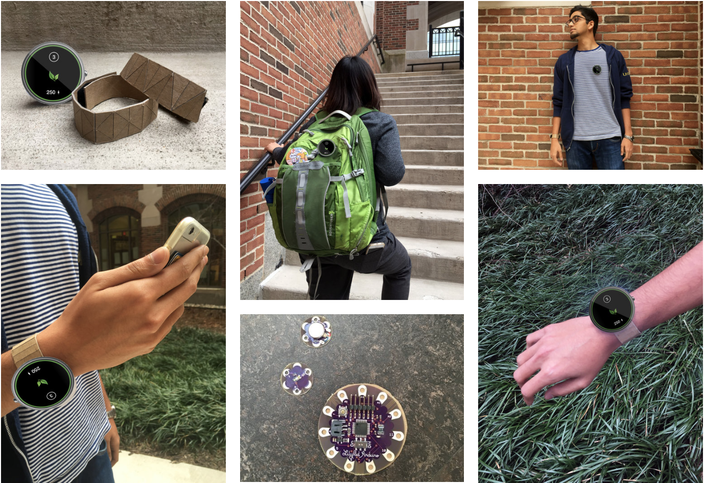

01 The Problem
In Ann Arbor, MI, the winter months are long, gray and cold.
Our exploratory research found many instances where students at the University of Michigan struggle with Seasonal Affective Disorder (SAD) during those months. This problem is further compounded by findings that many students spent majority of their time indoors over the course of the winter semester.
We view this as a design opportunity to create a wearable device that is not only capable of measuring one's sunlight intake, but also encourage users to be cognizant of taking steps that can prevent SAD, improve one's health and productivity through fun and salient info visualization.
02 User Research
We interviewed five individuals to understand their personal experience with Seasonal Affective Disorder, their wearables use behavior and how much sunlight are they getting on a day to day basis. Many of our interviewees do not know how much sunlight they should get. Some needed to buy SAD therapy light or take vitamin D supplements to counteract the effects of Seasonal Affective Disorder. In addition, we consulted literature review and read online resources such as websites and blogs to understand what has been done in this domain.
Our research has informed us that not getting enough sunlight have been found to influence one's circadian rhythm and productivity. It is also linked to vitamin D deficiency and causes depression or chronic diseases such as cancer. But, on the flip side, too much sunlight outdoors will cause sunburns and skin cancer. Interestingly enough, over the course of our research, we come across no other designs that address sunlight intake as comprehensively as our design.
03 Quotes
“Sunlight is a mood booster and helps with circadian rhythm.” - User Participant # 1
"Sunburns contribute to a high risk of skin cancer" - User Participant # 2
"If there is something social to do, I will go outside" - User Participant # 3
04 Processes
05 Our Solution
We created Superbas with three key considerations in mind - measurement strategy, behavior change and versatile form factor. Superbas tracks sunlight to measure if the user is getting too little or too much sunlight, as such Superbas Suntracker is not only useful during the winter months where there is very little sunlight, but it is also helpful during the summer months when the user spend lots of time outdoors. Superbas prevents Seasonal Affective Disorder by regulating circadian rhythm in the winter while also preventing sunburns during the summer months.
06 Key Considerations
Measurement strategy
The device needs to be extremely easy to use, to store and to charge. It needs to be able to be integrated easily into the lifestyle of the user by being versatile and fun to use. The sensor will be embedded in the device itself and will adapt accordingly to the user's lifestyle.
Motivation & behavior change
We find ways to nudge users to indulge in good behaviors and encourage them to do more activities that will encourage them to get more sunlight. We do so by introducing gamification elements, such as sun currency (sols), experience points and leaf streak. We decided on thoughtfully incorporating push notifications into the system, to alert users when it is warm and there is sunlight outside, or presenting users with fun quests to encourage continuous engagement.
Form factor & versatility
We have given a lot of thought about the form factor, and we do not think a single form factor is sufficient to address the needs of all our users. As such, we believe the form factor has to be versatile and conform to the user's expectations. As such, Superbas is a sensor with a display screen and can be worn on the wrist, on the backpack or clipped onto the jacket or shirt.
07 Wireframes Sketches
Superbas Wearable Hardware Design
08 High Fidelity Prototype
For Superbas wearable
For Apple Watch
Designed for quick interactions - allowing users to track their current sunlight intake and record mood. Watch will prompt users for their mood at random intervals throughout the day.

For the iPhone
Interactions are richer on the phone, incorporating elements of gamification to motivate users to get more sunlight.
Onboarding Process - Step 1
Onboarding Process - Step 2
Visualize Your Progress
Visualization on Different Scales
Play With Teams or as a Solo Ranger
Interaction Flowmap